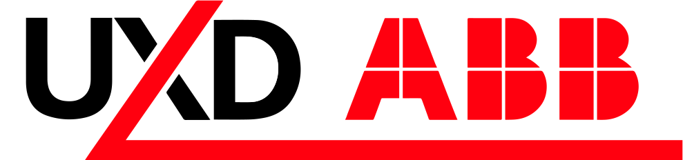
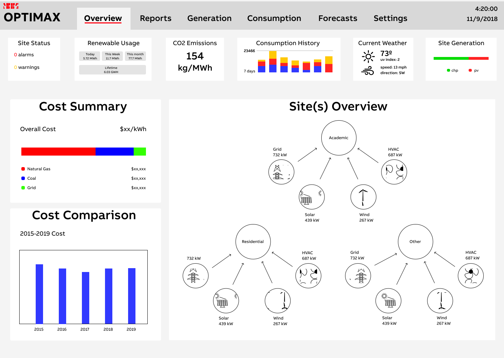
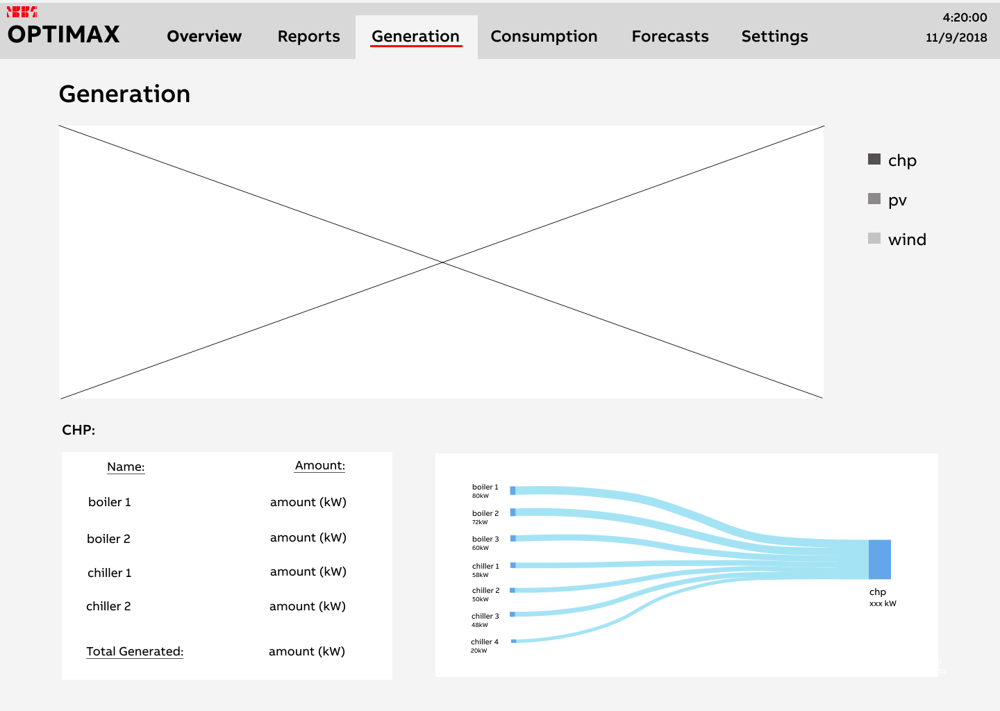
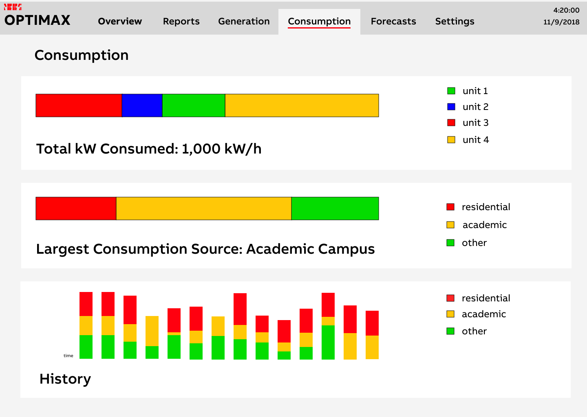
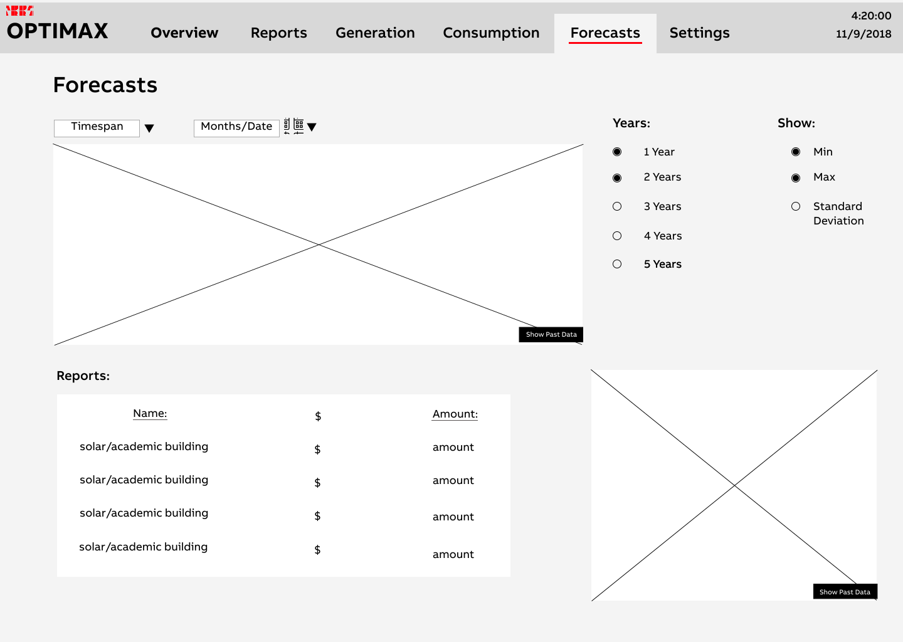
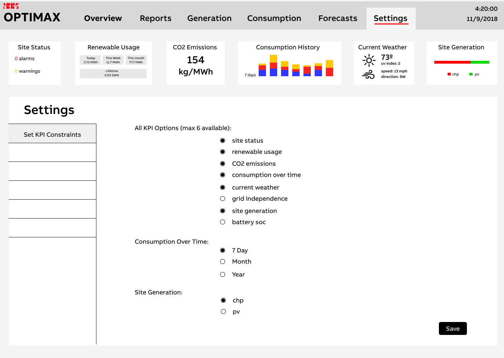

ABB REMS Redesign
Project Duration:
Aug 2018 - Dec 2018
Team Members:
- Delaney Rundell (Project Owner)
- John Paul Oses (Team Lead)
- Graeme Goss
- Amy Zhang
- Sarah Field
Personal Contributions:
- Secondary Research
- Sketching
- Wireframing

Project Summary:
ABB’s Industrial Automation Power Generation (IAPG) business primarily serves large utility-scale power generation facilities around the world by providing automation and control systems that safely and efficiency operate electrical power plants providing electricity to billions of people on the planet. As we move forward to a cleaner and lower carbon future, IAPG developed a Renewable Energy Management System (REMS) designed to manage small-scale “behind the meter” energy assets including photovoltaics, combined heat and power systems, electricity storage, EV charging, and more. The challenge is that they do not have intimate knowledge of the end users in this market and therefore do not know how best to design the UI/UX. Our goals were to understand the University market segment (customer), who the end users may be and what their needs are related to renewable energy management. Given these needs, design a UI/UX that satisfies 1-2 primary use cases while providing a user experience for the end user that meets the expectations of someone in this market segment (e.g. university utility plant operations staff).
Our Approach:
Research
Secondary research to learn more about energy management. Primary research to learn more about users, their job roles, and their priorities and pain points.
Ideation
Co-design workshop with 2 users. Whiteboarded and sketched possible designs/layouts for renewable energy management system. Identified important content to include on pages.
Wireframing
Translated sketches into high fidelity wireframes as part of final deliverables.
Research
Secondary Research
Goals:
- Gain a base understanding of energy management and electricity
- Learn common terms and associations when it comes to energy and energy consumption
- Compare other examples of products already on market or soon to be on market
Most of our Secondary Research consisted of looking more into energy, energy consumption, and energy management. We came into this project without a very strong understanding in any of these ideas. Therefore, we needed to start off with strong secondary research to get us well acquainted with the field we were working within. We also did lots of competitive analysis throughout our design process in order to compare ABB’s direction to other industry standards.
Our Secondary provided the footing for our group to begin to understand more about this field. With the gained knowledge of industry standards and language we were able to go into our primary research with enough knowledge to be able to speak to experts in the field. Because of this we were able to build a strong repertoire with our users.
Primary Research
Interviewed 3 users
Reached out to the Directors of Energy and Utility at both Purdue University and Indiana University and also spoke with the Utility Analyst at Indiana University.
Interview Goals
- Learn who our users are, their background and current job role, what their priorities and goals are, and what pain points they have
- Learn how energy is allocated currently and what the university is currently doing with renewables
Main Takeaway's
- Cost is the most important aspect of users' jobs
- Systems will differ for people who are managing day-to-day functions vs. overall manager
- Renewable energy isn't really a priority to universities this point due to cost
Ideation
Co-Design Workshop
Workshop Goals
- Have users give their expert opinions on how REMS should be designed
- Gain insights to help drive ideation phase of design
2 Workshop Participants
These participants included one of our interviewees, who is the Energy Manager at Purdue’s Utility Plant Office Facility, and his intern, who works closely with the energy management system that Purdue uses and has intimate knowledge on renewable energy
3 Workshop Activies
Created detailed protocol around 3 main activities that we wanted our participants to work through together


looks_one Activity 1
"Renewable Affinity Diagramming"
Goals:
- Find out what participants expect to see from a renewable energy management system
- Gain an understanding of how participants group terms related to renewable energy
looks_two Activity 2
"Prioritize the Data Viz"
Goals:
- Gain an understanding of stakeholder priorities when it comes to a REMS
- Find out what participants want to see first when looking at the REMS
looks_3 Activity 3
"Visualize it Yourself"
Goals:
- Get participants to draw any visualizations that we did not provide them in the previous activity
Takeaway's from Activity 1:
- Reports should be data-driven and they have to be designed in a way to easily identify the economics of it
- With the grid - everything has to be integrated and it’s helpful to see data instantaneously and dynamically
- A big surprise was that our participant who is highly cost driven, didn’t think about writing “cost” on one of the main sticky notes
- Important categories included storage, grid, cost comparison, % renewables, dynamic, report/statistics, emissions, integrative, and energy saving
Takeaway's from Activity 2:
- Top down structures are where the user’s mind goes first (helpful to have a general then more specific approach)
- Having dropdown menus where the user can go further into a specific data function are helpful
- Too much customization can be bad because it adds unnecessary complexity and is hard to use for multiple levels of users (building managers vs. entire system managers)
- Graph trends are helpful especially when compared with previous year/month data to show easy comparisons
- Executive summaries are the most important thing to see and showcase on the main page for easy interpretation of data
Takeaway's from Activity 3:
- Data you want to know from each source (i.e. wind, solar etc) should be clear and show the current conditions
- One participant listed the things she would want to see which include key data, cost per unit of each sources, how much is coming from each source, and demand curve of trend
- She also emphasized the importance of making it simple and clear to read and having a button to see each subsystem
- The other participant put more emphasis on having the data be real-time and automatically updated
Whiteboarding
In order to kick off the design phase of this project, we looked to our results from our research and co-design in order to inform our design decisions. We started off by diverging and whiteboarding the layout of the REMS as well as figuring out the content that needed to be included on each page.

Sketching
We then dove into sketching with several 2-3 minute rounds of sketching. Individually, we started off with an idea/layout for the REMS, then built upon our sketches with each round.


At the end, we came together and consolidated the most important parts of our sketches and transitioned into wireframes.
Wireframing
Below are two black and white templates I created using Figma for my team to work off.


These templates were used as a starting point to create the wireframes you see below. These wireframes repesent different pages within the REMS we redesigned. These pages include site overview, reports, generation, consumption, forecasts and settings.
Site Overview Page
Allows users to view “quick statistics” of information and current conditions that may be important to them regarding their site. There are three main parts of the site overview: KPI’s, cost tracking, and energy flow.
Reports Page

Allows users to create reports for any type of data for any period of time they would like to see
Generation Page
Shows the user visualizations showing the amount of energy the site has generated over time.
Consumption Page
Consists of 3 visuals showing energy consumption within the user’s site. Allows the user to quickly track how much energy different assets are consuming.
Energy Overview Page

Dives a little bit deeper into the more specific information pertaining to a particular kind of energy source. In this specific case this page of the wireframe dives deeper into the solar energy data.
Forecast Page
Users can see a range of types of data visualization for upcoming months/years. At the top left, users can select a specific timespan to compare and lookup forecasts and can select how many years forward as well as min, max,or standard deviation. Users can also see a list of broken down reports (bottom left) which list price and amount.
Settings Page
Gives users a customizable portion of what they want to see at the top “quick stats” portion where they can select the KPIs that are most important to them. Users can also choose how they want their data presented (weekly/monthly/or yearly) based on how they want to see the trends.